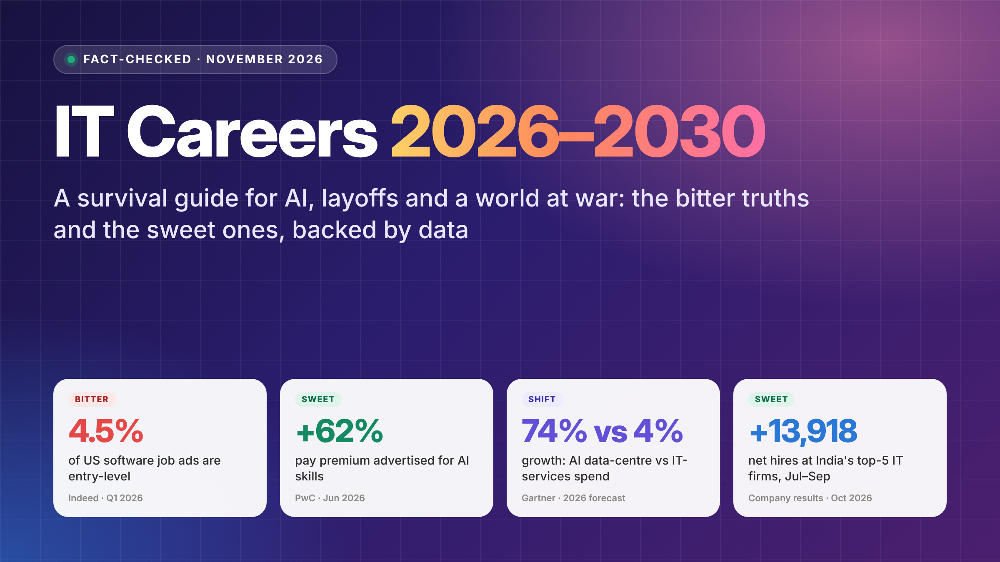
IT Careers in 2026–2030: A Fact-Checked Survival Guide for AI, Layoffs and a World at War
What the data really says, bitter and sweet, for IT engineers with and without AI skills, and what to do about it at every career stage.
It will be harder for IT engineers over the next few years, but how much harder depends on your level and your skills. Beginners and people who only do routine tasks are being hit hardest. Experienced engineers who use AI well are, so far, in demand and earning more.
Tech layoffs in 2026 are running above 2025. Entry-level software jobs have shrunk to a sliver of job ads. Visa and trade rules keep changing. Yet the best research still finds no broad, economy-wide wave of job losses caused by AI, and money spent on technology is growing fast. It is simply moving: towards AI and data centres, and away from traditional IT services.
The short version
1. Reality check: the key numbers
Layoffs are rising again
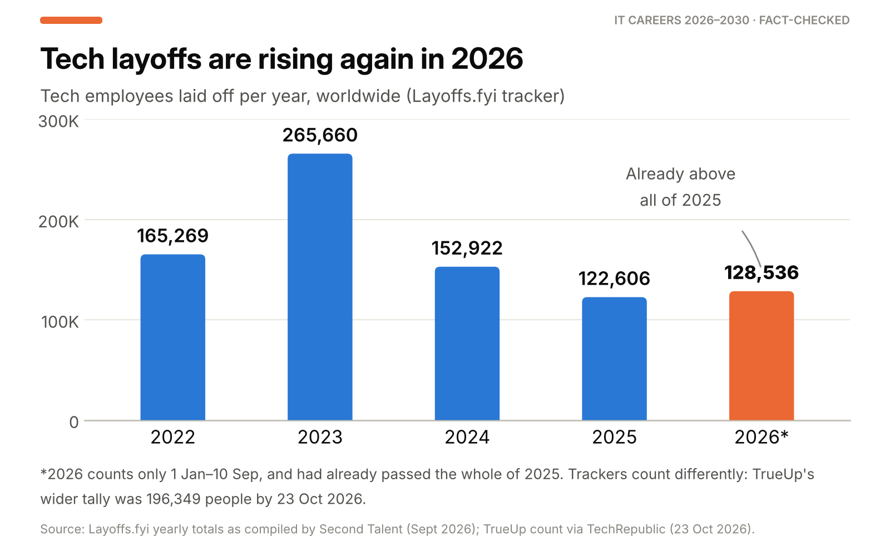
Layoffs.fyi, which tracks tech layoffs worldwide, counted 128,536 people laid off by 10 September 2026. That is more than the whole of 2025, with nearly four months still to go. Broader trackers count more: TrueUp had 196,349 people affected by 23 October.
2026 is the worst year since 2023, but still about half of the 2023 peak (265,660). This is a painful downturn, not a collapse.
"AI did it" — or did it?
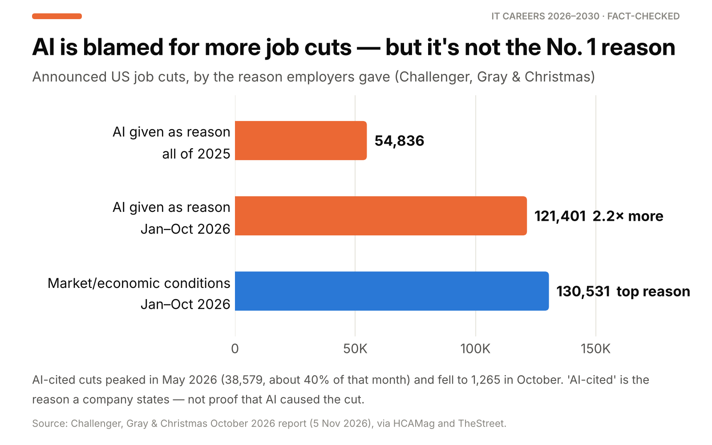
Challenger, Gray & Christmas counts the job cuts US employers announce, and the reasons they give. Through October 2026:
- Employers named AI in 121,401 announced cuts, more than double the 54,836 for all of 2025.
- AI-cited cuts peaked in May (38,579, about 40% of that month's cuts) and fell to 1,265 in October, the lowest of the year.
- "Market/economic conditions" (130,531) has now overtaken AI as the top stated reason for 2026.
- Technology leads all sectors with 171,501 announced cuts, 28% of the total and already above 2025's 154,445, even though total announced cuts across the economy (617,189) are down 44% on 2025.
The honest reading: "AI-cited" is not the same as "caused by AI". Oxford Economics said in January 2026 that firms "don't appear to be replacing workers with AI on a significant scale", and suspected some were dressing up cuts that were really about past over-hiring. OpenAI's Sam Altman has acknowledged the same thing: some companies blame AI for layoffs they would have made anyway, alongside some genuine displacement. Federal Reserve Governor Lisa Cook said in September 2026 that evidence of AI significantly reshaping the labour market is still limited, while pointing to weaker demand for coding work and tougher conditions for recent graduates.
High confidence that AI is part of the story and that some companies overstate it. Medium on exactly how big AI's real share is. Nobody can measure that precisely yet.
Software job ads: down a lot, now recovering at the top
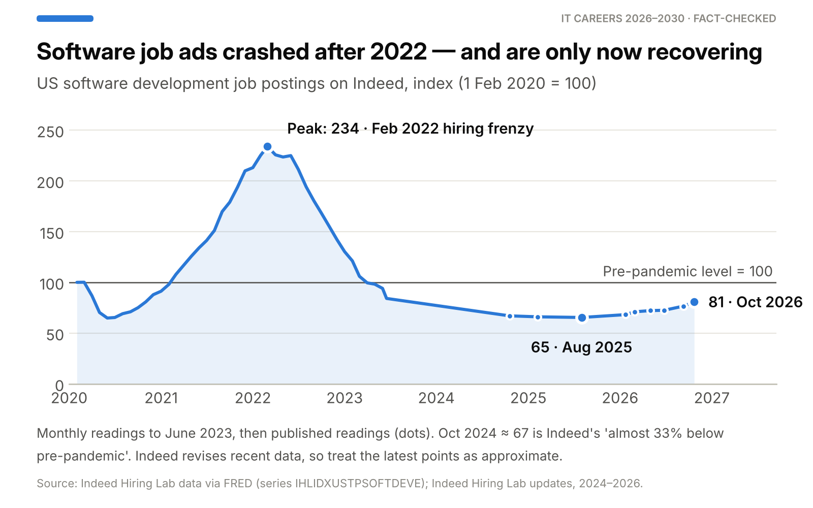
Indeed's index of US software job postings peaked at 234 in February 2022 (February 2020 = 100) during the pandemic hiring frenzy. It fell below pre-pandemic levels in spring 2023 and spent 2024–25 in the mid-60s. By 23 October 2026 it had climbed back to about 81, still roughly 19% below February 2020.
The rebound is lopsided. Indeed Hiring Lab found that 71% of the increase in software postings between May 2025 and May 2026 came from senior roles, and 37% from jobs with "AI" in the title. In April 2026, more than 47% of software postings mentioned AI. Indeed economist Guillermo Gallacher says the link between AI exposure and job postings "appears to be flipping, from job destruction to job creation".
The bottom rung has almost disappeared
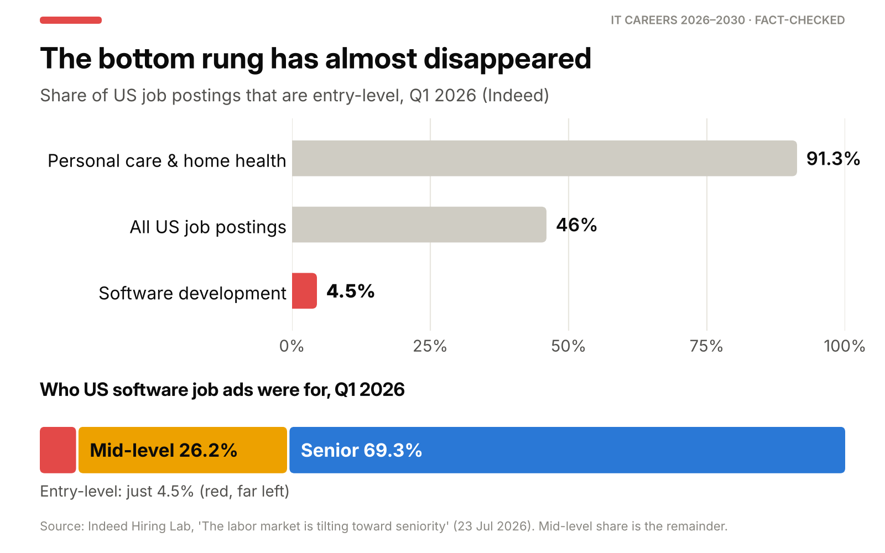
In Q1 2026, only 4.5% of US software development postings were entry-level, the lowest of any sector Indeed tracks, and 69.3% were senior. Across all US job ads, entry-level roles are still 46%. Demand for software work is coming back, but mostly for experienced people who can work with AI.
Recent graduates
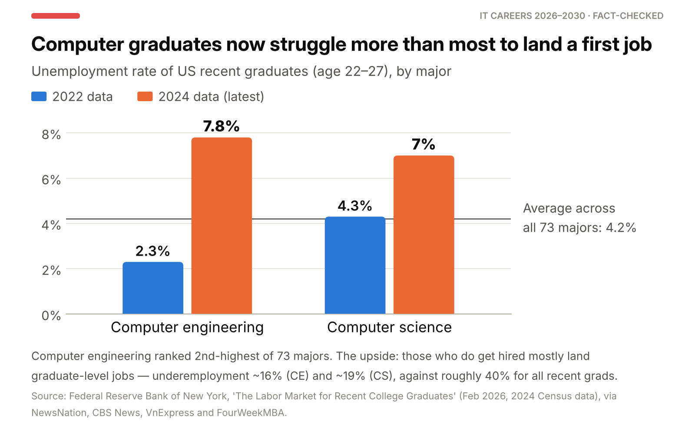
New York Fed data for 2024 (published February 2026) shows computer engineering graduates aged 22–27 with 7.8% unemployment, the second-highest of 73 majors and up from 2.3% in 2022. Computer science was at 7.0%, up from 4.3%. Across all recent graduates, unemployment stood at 5.6% at the end of 2025.
The nuance: computer graduates find it harder to get a first job, but those who do are far less likely to end up in work that doesn't need a degree, and they earn the highest early-career pay of any major (a median of about $90,000 for computer engineering). The by-major figures also come from small samples: one analysis puts the true computer engineering rate anywhere between about 4% and 11%. Treat the exact numbers as rough.
Young workers in AI-exposed jobs
Stanford's "Canaries in the Coal Mine" study found that employment of software developers aged 22–25 fell nearly 20% from late 2022 to July 2025, while older workers in the same jobs held steady or grew. In its August 2026 update, the employment gap for 22–25-year-olds in the most AI-exposed jobs had widened to 19%. Co-author Erik Brynjolfsson says there is still no widespread AI-driven displacement, but the patterns they found are holding or growing.
Critics, including the Economic Innovation Group (January 2026), argue that part of the drop reflects hiring that slowed in 2022, before ChatGPT, when interest rates rose.
Medium-high that entry-level jobs in AI-exposed work are weaker than elsewhere. Medium that AI is the main cause.
Is AI already shrinking the job market?
Not broadly, at least not yet. Yale's Budget Lab, updated in October 2026, found that "measures of AI usage show no connection to changes in employment or unemployment", and that the mix of jobs is not yet shifting in ways that line up with AI's arrival. The US Bureau of Labor Statistics still projects growth in most computer jobs (see Section 6).
AI is hurting specific groups (beginners, routine coding and support work), but there is no broad collapse in tech jobs. That could change quickly, and the Yale researchers say exactly that.
2. India: the world's IT back office under pressure
Hiring is back, unevenly
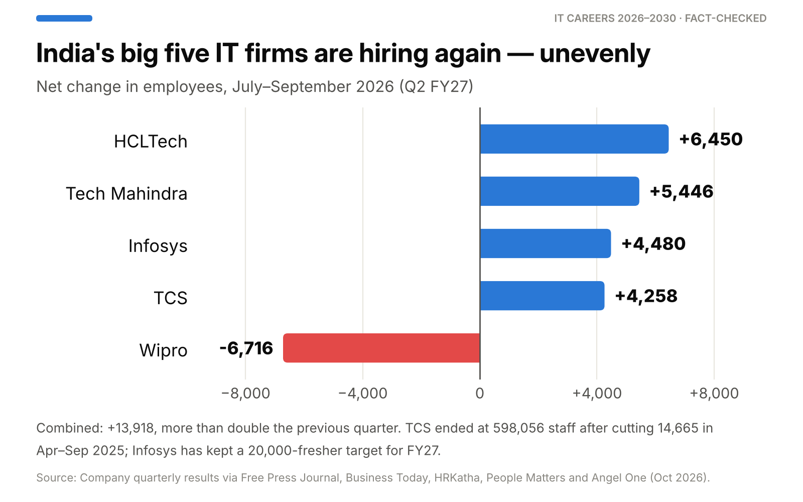
India's five biggest IT services firms added a net 13,918 employees in July–September 2026, more than double the previous quarter. HCLTech led (+6,450, almost all from fresher intake), followed by Tech Mahindra (+5,446), Infosys (+4,480) and TCS (+4,258). Wipro cut 6,716.
Context matters. TCS ended September at 598,056 people, after a restructuring in which its headcount fell by 14,665 in April–September 2025. It onboarded 10,000 freshers in July–September 2026, and Infosys has kept its target of 20,000 fresher hires for FY27.
The industry picture
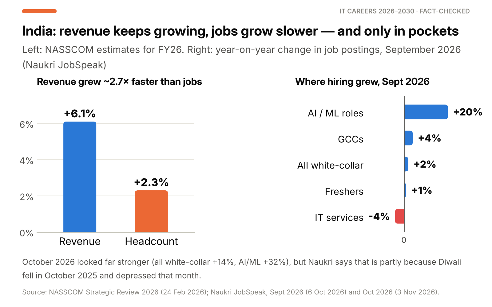
NASSCOM's Strategic Review (24 February 2026) estimated FY26 revenue at $315 billion (+6.1%), with exports of $246 billion and AI revenue of $10–12 billion. But headcount grew only 2.3%, about 135,000 net jobs, to roughly 5.95 million. More than 2 million professionals were upskilled in AI.
Revenue is growing almost three times faster than jobs. Firms are getting more work done per person, and the old "pyramid" model, with many freshers under a few seniors, is weakening.
Naukri's JobSpeak index shows where hiring is moving. In September 2026, overall white-collar hiring rose only 2% and IT/software services fell 4%, but AI/ML roles rose 20%. AI/ML fresher roles inside IT grew 19%, and AI/ML roles for people with 13–16 years' experience grew 54%. October looked much stronger (overall +14%, AI/ML +32%), but Naukri says that partly reflects a low base, because Diwali fell in October in 2025.
GCCs (Global Capability Centres: in-house tech hubs that foreign companies run in India) have become one of the steadier sources of tech jobs, and recruitment tracker foundit calls freshers the fastest-growing group in GCC hiring this year.
Hiring has turned up from a very weak 2024–25, but growth is concentrated in AI/ML, GCCs and senior roles. General IT services hiring is flat to slightly up. Confidence: medium-high.
3. How AI is really changing IT work: real vs hype
Does AI actually make developers faster?
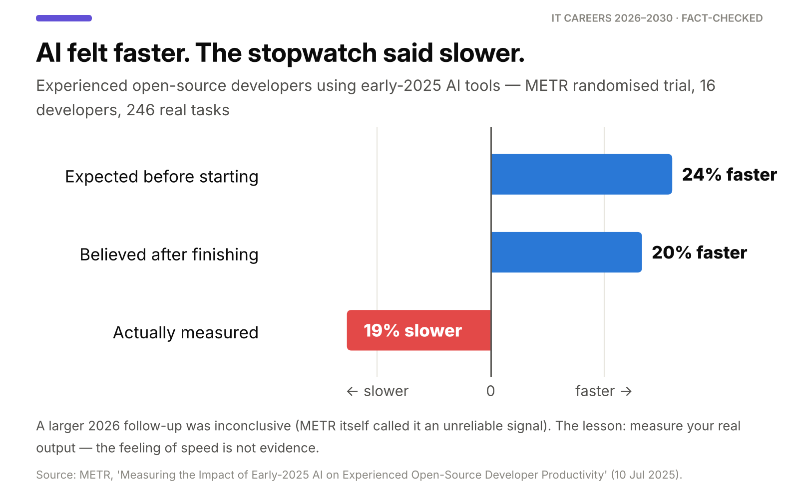
In a randomised trial published in July 2025, METR gave 16 experienced open-source developers 246 real tasks on codebases they knew well. With early-2025 AI tools, the tasks took 19% longer. The developers had expected a 24% speed-up, and even afterwards believed they had been 20% faster.
A larger follow-up published in February 2026 (57 developers, 800+ tasks) pointed towards time savings this time, but METR itself called the result an unreliable signal, because 30–50% of developers held back tasks they didn't want to do without AI.
AI tools now probably help most developers somewhat, especially on routine work and unfamiliar code, with smaller gains on complex work. People consistently overestimate their own speed-up. Use AI, but measure your real output.
Everyone uses it, few trust it
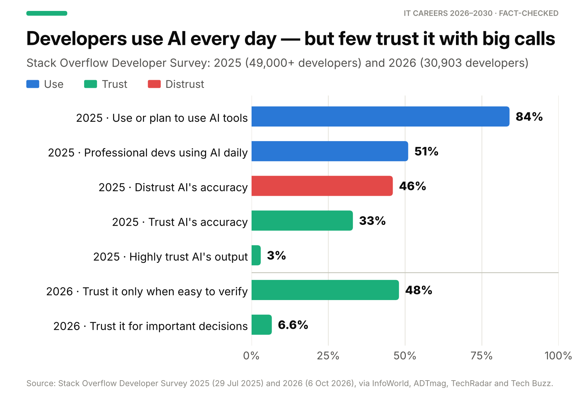
Stack Overflow's 2025 survey of 49,000+ developers found 84% using or planning to use AI tools, and 51% of professional developers using them daily. Yet more distrusted AI's accuracy (46%) than trusted it (33%), only 3% trusted it highly, and the top complaint (66%) was answers that are "almost right, but not quite". In the 2026 survey of 30,903 developers, just 6.6% trust AI for important work decisions, and 48% trust it only when they can easily check it.
Checking, reviewing and debugging AI output has become a core job skill. Someone has to be accountable for code that "looks right". That is a human job, and it rewards people with deep fundamentals.
Enterprise AI: big spending, patchy results
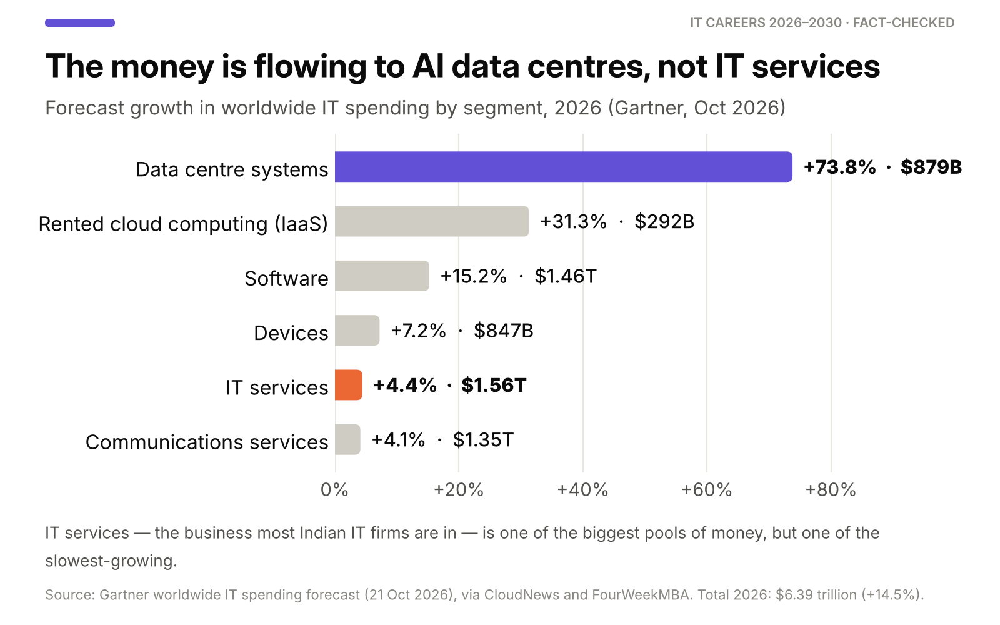
MIT's NANDA initiative reported in July 2025 that "95% of organizations are getting zero return" from $30–40 billion in generative AI investment, though its method was thin (52 interviews, 153 survey responses and 300+ public deployments, with self-reported success). Gartner forecast in June 2025 that over 40% of agentic AI projects will be cancelled by the end of 2027, because of rising costs, unclear value or weak risk controls. That is a forecast, not a measurement.
Meanwhile the money keeps flowing. Gartner's October 2026 forecast puts worldwide IT spending at $6.39 trillion in 2026 (+14.5%) and $7.35 trillion in 2027 (+15%).
Spending on data centre systems is growing nearly 17 times faster than spending on IT services (+73.8% vs +4.4%), and IT services is the business most Indian IT firms are in. Services still grow, but slowly. Careers tied to AI infrastructure, cloud, data and security sit where the money is flowing.
Bubble risk. Gartner now describes AI infrastructure as both a technology platform and an investable asset class, backed by giant cloud companies and private capital. If returns disappoint, as the MIT and Gartner findings suggest they may for many projects, that spending could slow sharply. That is speculation, not a forecast, but it is a real risk for AI-only careers.
What companies are actually doing
- Block (fintech) cut more than 4,000 of its 10,000+ staff in February 2026, leaving just under 6,000, as it moved to an AI-driven operating model, according to Jack Dorsey's shareholder letter.
- Amazon announced about 16,000 corporate job cuts in January 2026 as it removed management layers.
- ServiceNow made a third round of cuts in 2026 after its third-quarter results, affecting staff in the UK, US and India.
Many large firms are using AI mainly to avoid hiring, rather than to fire existing staff in bulk. That is why the pain lands hardest on job seekers and freshers.
4. How wars and geopolitics are affecting IT careers
US visas: the $100,000 H-1B fee saga
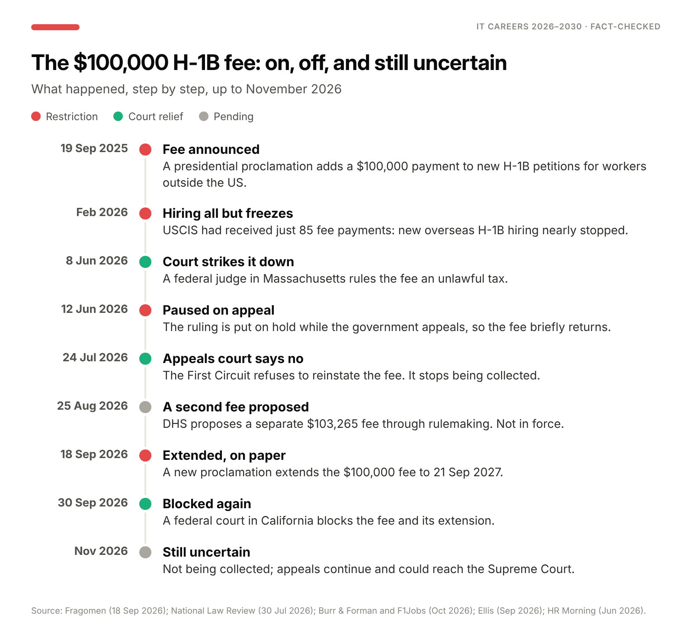
Right now the fee is legally blocked, but the US government clearly wants H-1B hiring to cost more, and the courts could still change direction. If you are planning a US move, treat it as uncertain, keep backup plans (GCC roles in India, Europe, the Gulf), and don't borrow heavily for a US master's degree on the assumption that an H-1B will follow.
Trade wars and tariffs
In early February 2026, the US and India agreed an interim trade deal that cut US tariffs on Indian goods from 50% to 18%. On 20 February, the US Supreme Court struck down, by 6–3, the tariffs imposed under the emergency-powers law IEEPA.
IT services are not directly tariffed: tariffs apply to physical goods. The real effect on IT is indirect, as uncertain clients delay discretionary projects.
Wars
Israel. During the 2026 war with Iran, an Israel Innovation Authority survey of 637 tech companies (18–23 March 2026) found that 48% were missing more than a quarter of their staff because of reserve duty, school closures and security rules; 42% reported significant development delays and 71% said fundraising was disrupted. Earlier, in the Gaza war, "15 to 20 percent of employees, and sometimes more, were called up", the authority's CEO Dror Bin told AFP. The upside: defence tech has "replaced cybersecurity as the most in-demand high-tech sector", according to Menahem Landau of investor Caveret Ventures, and a survey of 500 Israeli tech firms found more than a third accelerated hiring during the war, led by defence-tech companies.
Russia–Ukraine, US–China chip controls, Red Sea disruption. This guide did not gather fresh 2026 numbers on these. The well-documented broad trend is towards more defence, cybersecurity and data-localisation work, and towards moving work to friendlier, closer countries ("nearshoring").
Geopolitics creates winners (cybersecurity, defence tech, local or "sovereign" cloud, compliance) and losers (roles that depend on easy visas and on clients' discretionary budgets).
5. AI-skilled vs non-AI-skilled: side by side
First, be clear what "AI skills" means. There are three levels:
- AI user: uses AI coding or office tools well, checks the output, and is faster and more accurate as a result.
- AI builder: builds products on top of AI models: connecting them to company data, testing their answers, controlling cost and security.
- AI researcher: creates new models. A small, highly selective group.
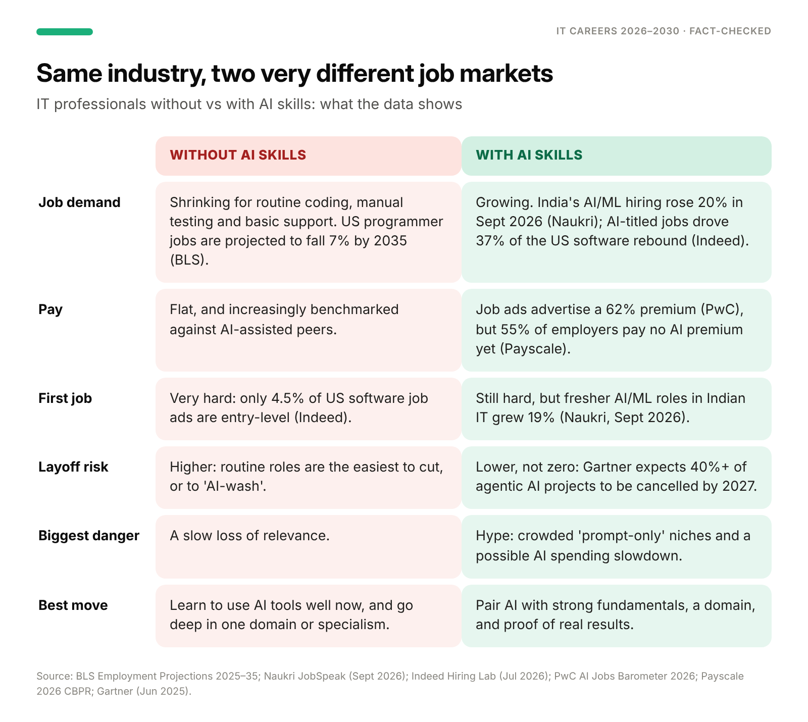
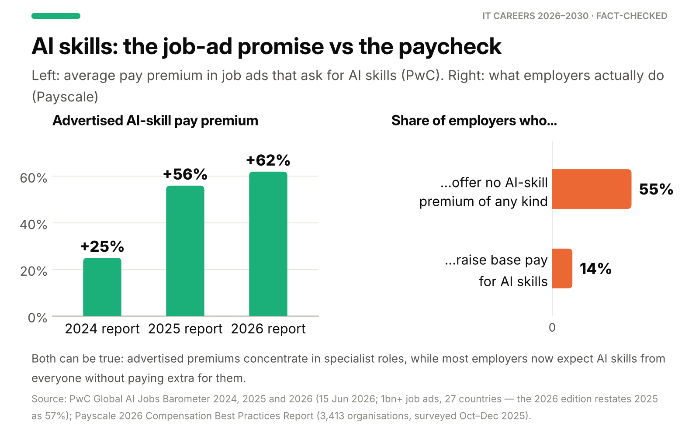
Key nuance. PwC's 62% premium is measured in advertised wages across all kinds of jobs. PwC also found that jobs requiring AI skills grew 69% over five years, against 9% for the job market overall. But roles that AI "democratises" (where it lets non-experts do the work, including some IT roles) are seeing slower job and wage growth than roles where AI amplifies expert judgement. "Knowing AI" is becoming a baseline expectation, not a lasting differentiator. The lasting premium goes to people who use AI to do expert work.
6. Role-by-role outlook, 2026–2030
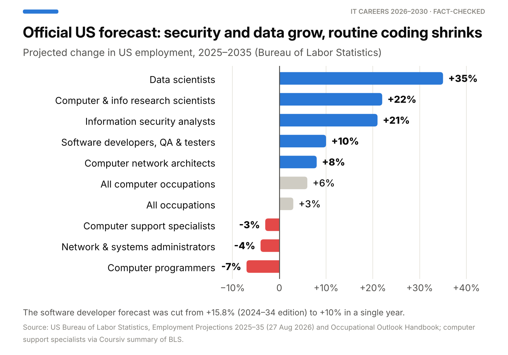
Note the downgrade: the BLS forecast for software developers fell from about 16% to 10% in a single year. And in shrinking roles such as network and systems administrators, the roughly 13,400 openings a year will come from replacing people who leave, not from new positions.
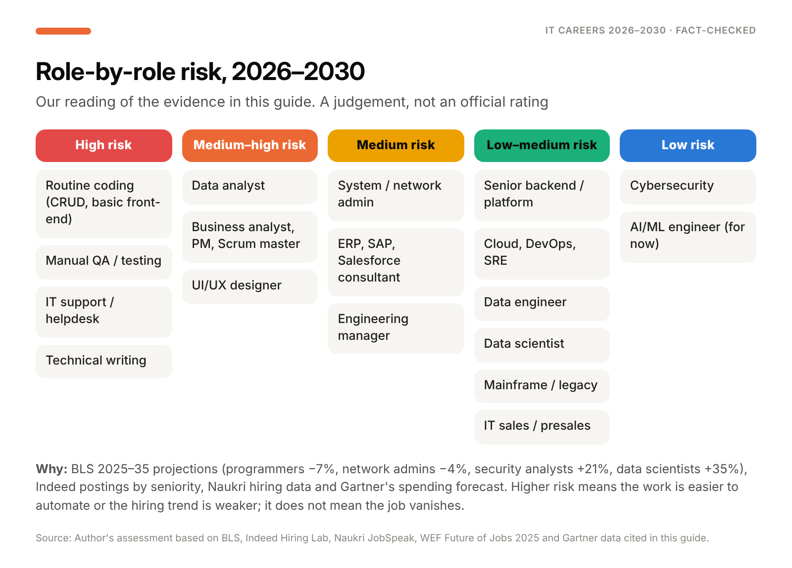
Risk levels are this guide's judgement, based on the data cited. They are not official ratings. Higher risk means the work is easier to automate or hiring is weaker; it does not mean the job disappears.
7. Guidance by experience level
The squeeze is sharpest at the bottom of the ladder, but every stage has a play. The short version: freshers need proof of work, mid-level people need ownership, and seniors need to turn experience plus AI into visible results.
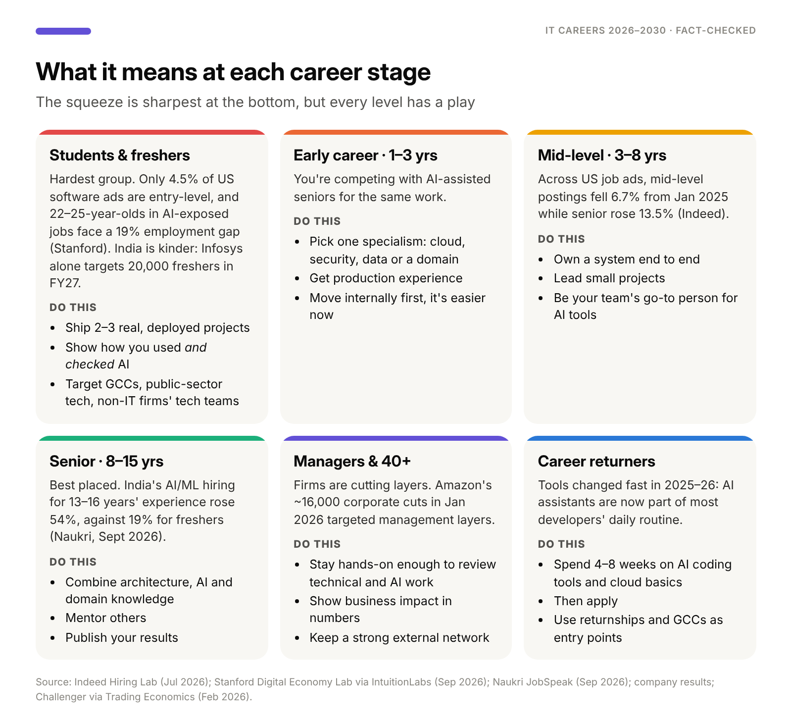
8. Your survival and growth action plan
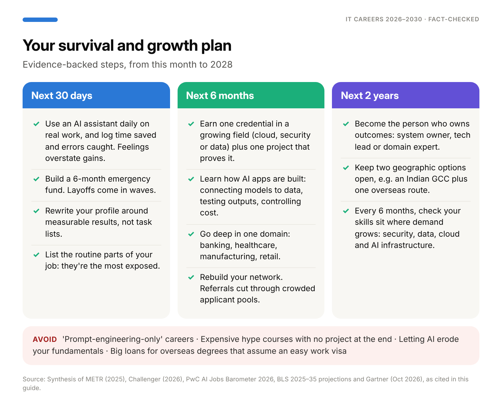
Why these steps? Because the evidence keeps pointing the same way: perceived AI gains are inflated (METR), layoffs arrive in waves (Block cut about 40% of its staff in one go), premiums go to expert work rather than to "knowing AI" (PwC, Payscale), and the money is flowing to security, data, cloud and AI infrastructure (BLS, Gartner).
9. Myths vs facts
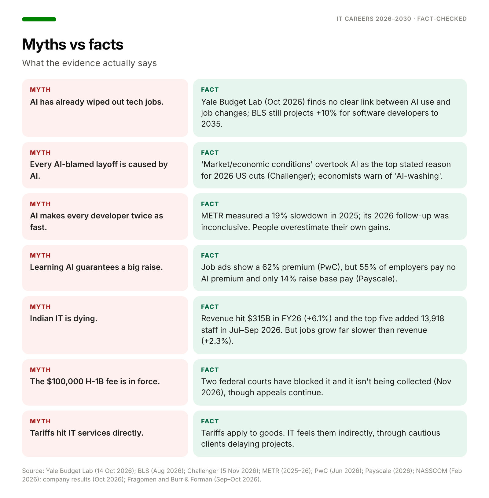
10. What nobody knows yet
- Whether the AI investment boom continues. If returns stay weak (MIT's 95%, Gartner's 40% cancellation forecast), spending could slow, and AI roles could shrink too.
- Whether cheaper software creates more demand for software (the "Jevons paradox": when something gets cheaper, people often use more of it). Indeed's 2025–26 data hints at this, but it is too early to know.
- How fast AI agents improve. METR could no longer get clean results in 2026 because developers refused to work without AI. That is itself a sign of how fast habits are changing.
- The courts' final word on the H-1B fee, and the fate of the proposed $103,265 fee.
- Wars and their spread. Israel–Iran, Russia–Ukraine and US–China tensions could escalate or ease.
- Whether the entry-level squeeze is temporary (interest rates, over-hiring) or permanent (AI). Experts genuinely disagree.
How sure are we about all this?
- Established facts (high confidence): layoff counts, company headcounts, BLS projections, court rulings and published survey results.
- Credible forecasts (medium): Gartner's spending forecast, BLS 10-year projections, Gartner's agentic-AI cancellation forecast, and the World Economic Forum's estimate of 170 million jobs created and 92 million displaced by 2030 (net +78 million).
- Opinion or speculation (low–medium): AI-bubble risk, how many layoffs are "AI-washed", and the role risk ratings in Section 6.
- Secondary sources: some figures come from reputable reports of primary data (Layoffs.fyi totals, the Indeed index via FRED, NY Fed by-major data, Gartner tables, company headcounts). Each chart names its source.
- Not covered with fresh 2026 data: UK, Canada, Australia and Germany immigration changes; Eastern European outsourcing after the Ukraine war; US–China chip controls; freelance-platform studies; age-bias data. Check these separately.
↗ Sources
Layoffs and job cuts
- Second Talent: Tech layoffs statistics 2026 (Layoffs.fyi totals, Sept 2026)
- TechRepublic: Tech layoffs 2026, TrueUp count (23 Oct 2026)
- HCAMag: AI blamed for 121,401 job cuts (Challenger, updated 5 Nov 2026)
- TheStreet: October job cuts at 3-year low (Challenger, 5 Nov 2026)
- Trading Economics: Challenger January 2026 (Amazon cuts)
- Oxford Economics: Evidence of an AI-driven shake-up is patchy (Jan 2026)
- Yahoo Finance: Sam Altman on "AI washing" (Feb 2026)
- Federal Reserve: Governor Lisa Cook speech (28 Sep 2026)
- Oman Observer: AI-linked tech layoffs in 2026 (Block)
- Salesforce Ben: ServiceNow lays off more staff after Q3
Job postings, graduates and young workers
- FRED: Software Development Job Postings on Indeed (US)
- Indeed Hiring Lab: AI and job postings, from destruction to creation? (8 Jul 2026)
- Indeed Hiring Lab: The labor market is tilting toward seniority (23 Jul 2026)
- Indeed Hiring Lab: Senior postings up 14.7% (Jul 2026)
- Indeed Hiring Lab: Q4 2025 US tech labor market update (PDF)
- Federal Reserve Bank of New York: The Labor Market for Recent College Graduates
- VnExpress: Computer engineering grads post second-highest unemployment (Mar 2026)
- FourWeekMBA: Computer engineering grads' jobless rate, 2022 vs 2024
- Economic Innovation Group: A viral chart on recent graduate unemployment is misleading
- IntuitionLabs: AI and entry-level jobs, incl. Stanford update (Sep 2026)
- Economic Innovation Group working paper (Jan 2026, PDF)
- Yale Budget Lab: Tracking the impact of AI on the labor market (Oct 2026)
Official projections and pay
- Stevens Institute: BLS 2025–35 projections for computer occupations
- BLS Occupational Outlook Handbook: Computer programmers
- BLS Occupational Outlook Handbook: Network and computer systems administrators
- BLS: AI, IT and employment, 2024–34
- Coursiv: BLS 2025–35 figures for IT support and admin roles
- PwC: 2026 Global AI Jobs Barometer
- ITPro: PwC finds a two-track labour market
- Robert Walters: The AI salary premium (PwC figures)
- Payscale: 2026 Compensation Best Practices Report
- World Economic Forum: Future of Jobs Report 2025
AI productivity, trust and spending
- METR: Measuring the impact of early-2025 AI on experienced developers (Jul 2025)
- ITPro: METR study coverage
- Stack Overflow Developer Survey 2025: AI
- InfoWorld: Stack Overflow 2025 survey, trust gap
- Stack Overflow Developer Survey 2026: AI
- Tech Buzz: Stack Overflow 2026 survey results
- MIT NANDA: The GenAI Divide (Jul 2025, PDF)
- Gartner: Over 40% of agentic AI projects will be cancelled by 2027 (Jun 2025)
- CloudNews: Gartner IT spending forecast table (Oct 2026)
- FourWeekMBA: Gartner data centres take half of 2027's rise
India
- NASSCOM: Annual Strategic Review 2026 press release (PDF)
- YourStory: India tech revenue to touch $315B in FY26
- YourStory: Naukri JobSpeak, September 2026
- Masai School: Naukri AI/ML hiring by experience (Sep 2026)
- Lapaas Voice: Naukri JobSpeak, October 2026
- Masai School: AI jobs in GCCs (foundit data, 2026)
- Free Press Journal: Indian IT giants add 14,000 employees in Q2
- Business Today: TCS adds 4,258 employees in Q2 (8 Oct 2026)
- HRKatha: IT hiring takes divergent turns in Q2 (Oct 2026)
- Angel One: Top five firms in H1 FY27 (TCS FY26 restructuring)
Visas, trade and wars
- Fragomen: $100,000 H-1B fee extended but vacated by court (18 Sep 2026)
- National Law Review: First Circuit denies stay (30 Jul 2026)
- Burr & Forman: H-1B $100,000 fee, where are we now?
- Ellis: Is the $100,000 H-1B fee still in effect?
- F1Jobs: Proclamation 11069 and the $103,265 proposal (Oct 2026)
- HR Morning: Federal judge strikes down the $100,000 fee (Jun 2026)
- Outlook India: India–US interim trade deal key takeaways
- Nelson Mullins: Supreme Court strikes down IEEPA tariffs (20 Feb 2026)
- Israel Innovation Authority: High-tech survey amidst the war (Mar 2026)
- Calcalist: 71% of startups report fundraising hit
- Ynet: Israeli tech hiring during the war